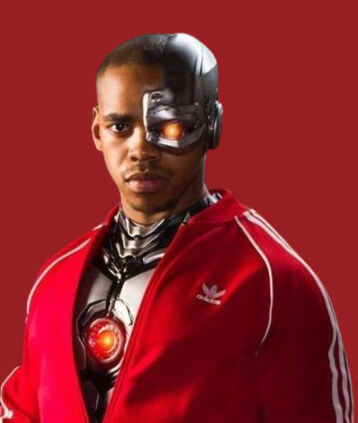

Selecione um personagem
- 

Dr. Niles Caulder
Dr. Niles Caulder - The Chief é o mentor e líder da Doom Patrol. Ele é um cientista brilhante, mas não possui poderes sobrenaturais. Sua especialidade é o estudo de fenômenos paranormais e a ajuda aos "monstros" com habilidades extraordinárias.